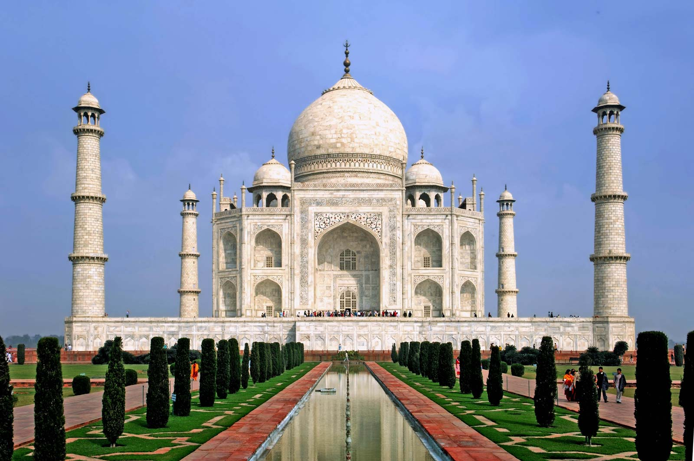

Most Popular Places You Can Visit
Travel World offers a broad array of high class services from Flight Tickets Travel to Holidays; Outbound Tours; Inbound Tours and organization of major conferences and events, catering to the diverse needs of customers. Whether it is a single flight or a complex itinerary across cities and continents or processing of visa and passport, Travel World has the right expertise to cater to your specific needs and save time, money and effort.

Taj Mahal, India
Taj Mahal, also spelled Tadj Mahall, mausoleum complex in Agra, western Uttar Pradesh state, northern India. The Taj Mahal was built by the Mughal emperor Shah Jahān (reigned 1628–58) to immortalize his wife Mumtaz Mahal
Statue of unity, India
The statue has been built as an ode to the Iron Man of India, Sardar Vallabhbhai Patel, the first home minister of independent India. He was responsible for uniting all 562 princely states of the country to build the Republic of India.
Somnath Temple, India
Shree Somnath is first among the twelve Aadi Jyotirlings of India. It has a strategic location on the western coast of India. The Pran-Pratistha at the existing temple was done on 11th May 1951 by then President of India, Dr. Rajendra Prasad.
Tirumala, India
Tirumala is a spiritual town in Tirupati district of the Indian state of Andhra Pradesh. It is one of the suburbs of the Tirupati urban agglomeration. The town is a part of Tirupati Urban Development Authority and located in Tirupati mandal of Tirupati revenue division
BIT, Mesra, India
Birla Institute of Technology, Mesra is a public deemed institute in Jharkhand, India. It was established in 1955 at Mesra, Ranchi, by the industrialist B. M. Birla. The institute was later headed by G. P. Birla, and the present chairman of the board of governors is C. K. Birla.
Akshardham, India
'Akshardham' means the divine abode of God. It is hailed as an eternal place of devotion, purity and peace. Swaminarayan Akshardham at New Delhi is a Mandir – an abode of God, a Hindu house of worship, and a spiritual and cultural campus dedicated to devotion, learning and harmony.